Shaped Canvases
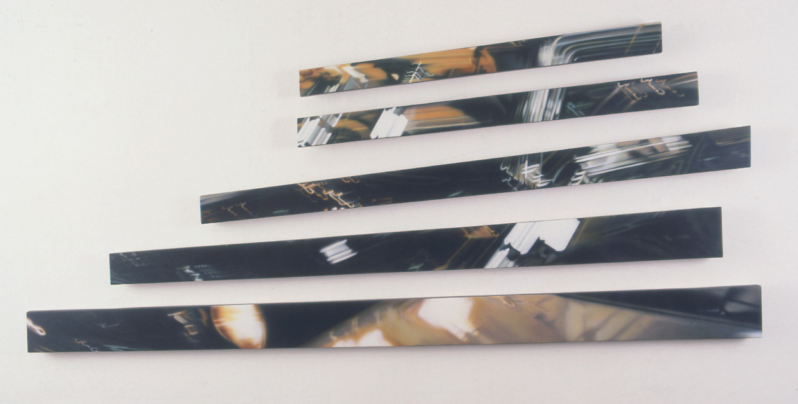
Große Bleichen,
Irgendwann kamen Shaped Canvases auf - als geeignete Form, um die Fragmentierung unserer Wahrnehmung zu zeigen, das Zerstreutsein, die Unmöglichkeit, ein Ganzes zu formulieren.
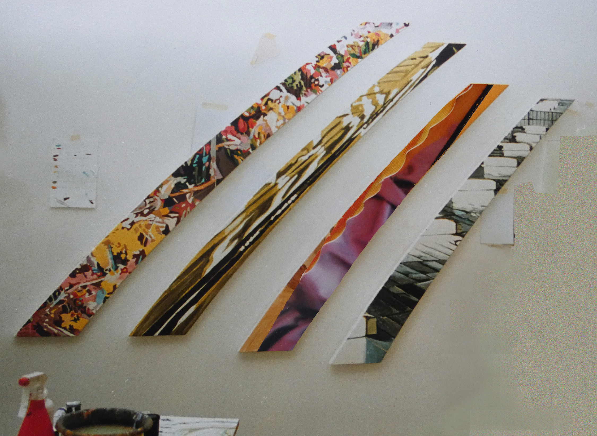
Vierspurig,
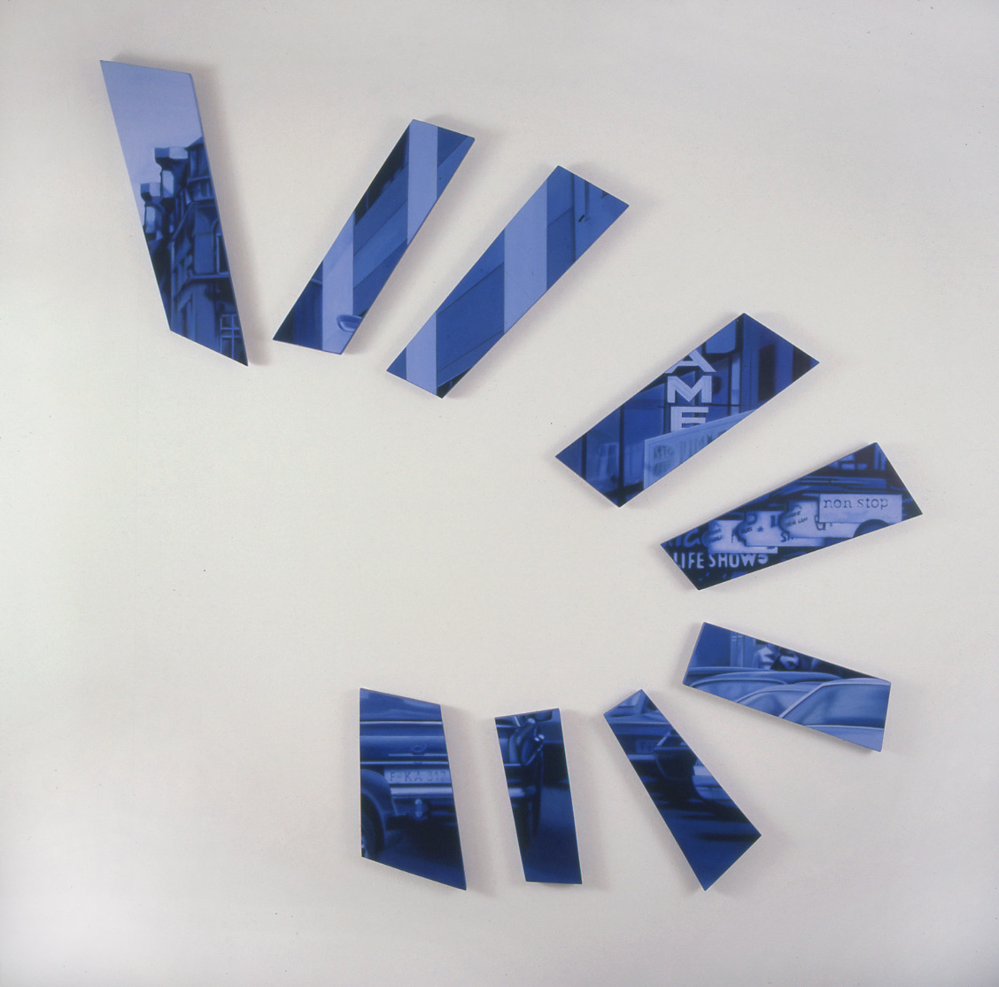
Danger sign,
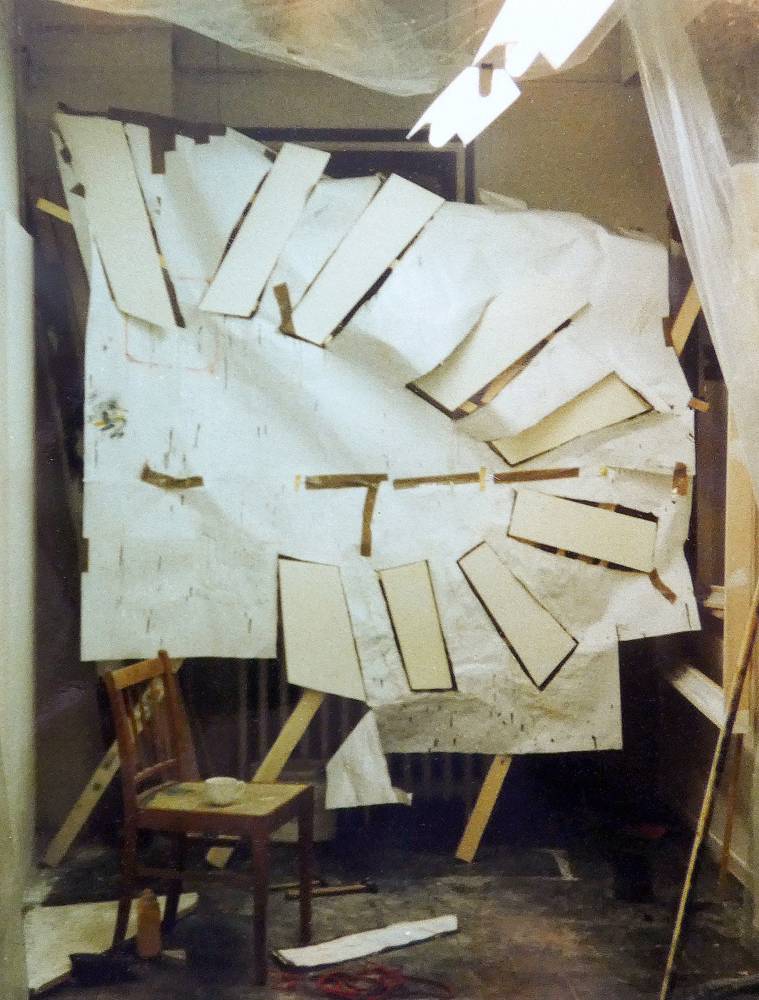
Danger sign, im Atelier Schanze

Vierteilig, Probehängung alte Wöhr,
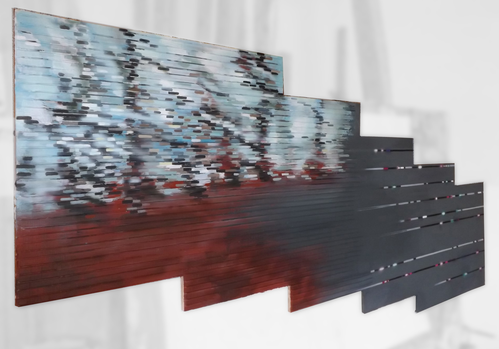
o.T.
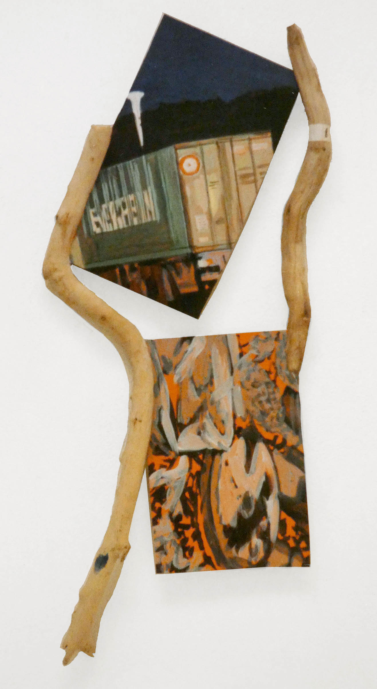
Jonglierbild, ein Teil von dreien,
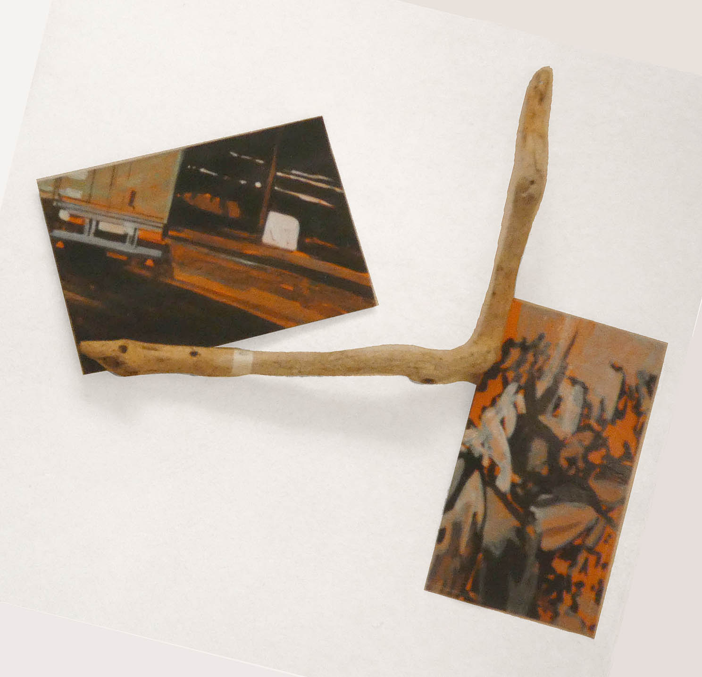
Jonglierbild, ein Teil von dreien,
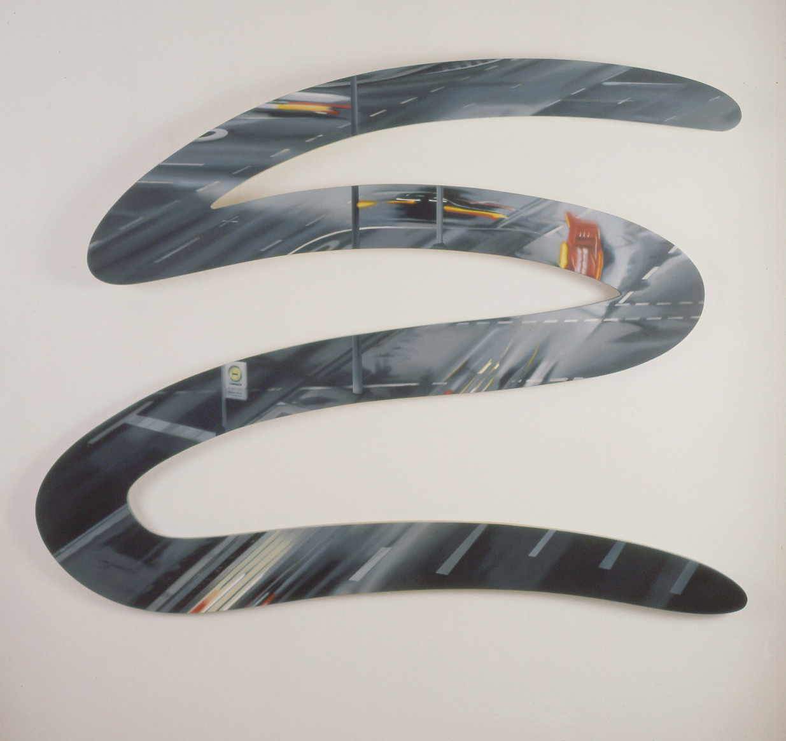
Grindel,
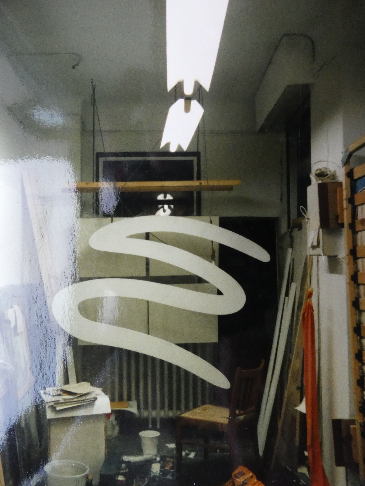
Grindel, im Atelier Schanze
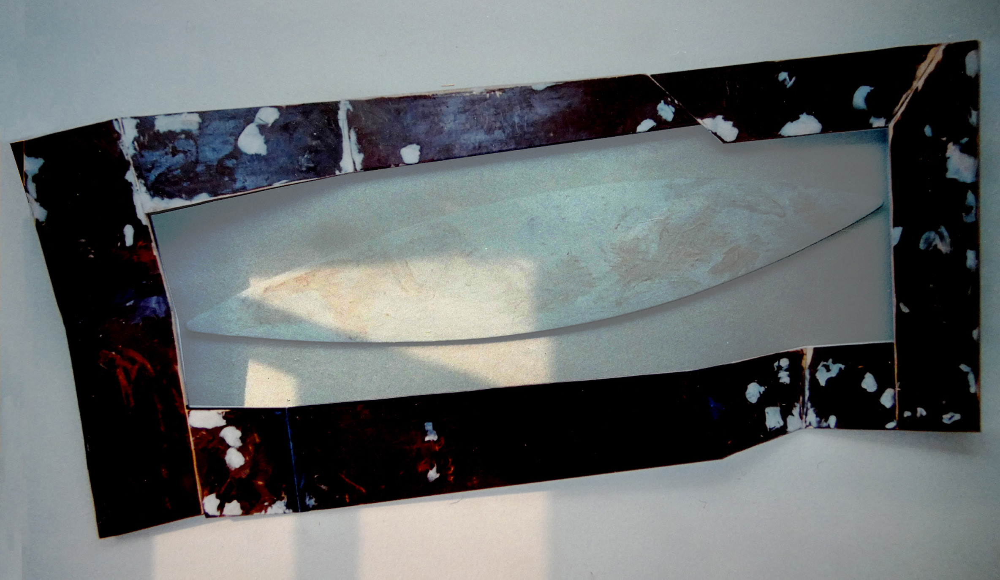
o.T.,
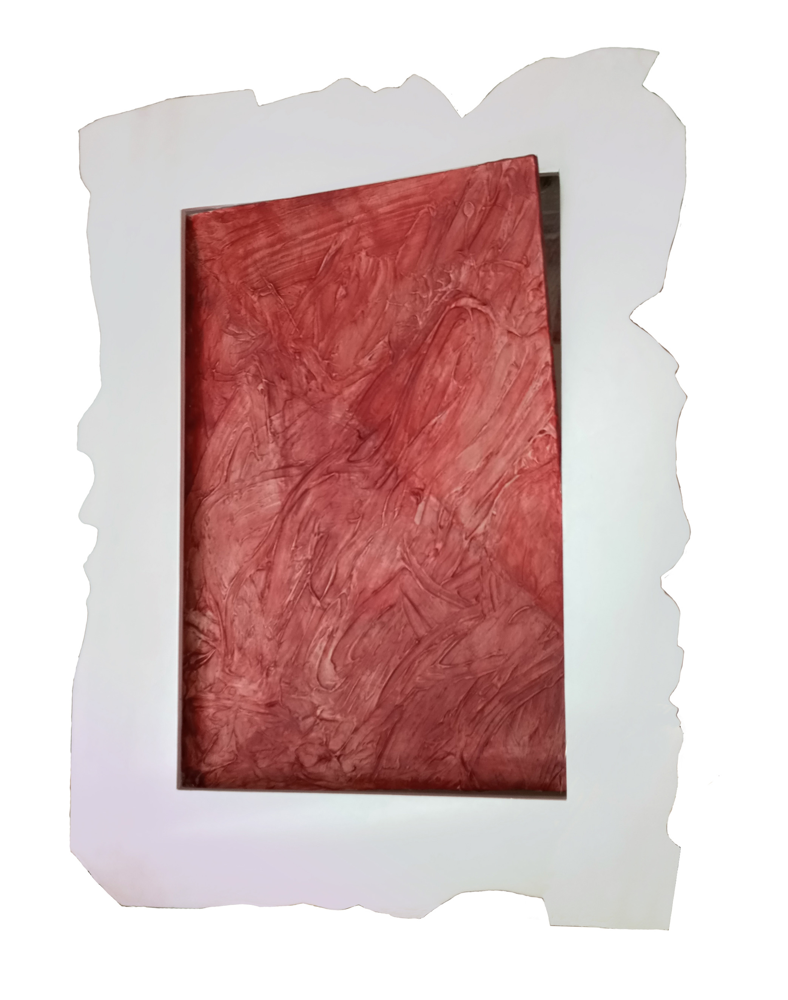
Dow Jones Index,
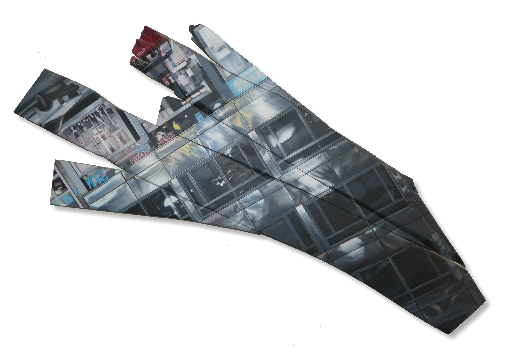
Pandora,
Pandora ist eines einer ganzen Reihe von Bildern, die Eigenschaften von Figuren oder Vorgängen aus der griechischen Mythologie bebildern, ohne die Requisten und Kostüme der Szenen aufzuzählen.
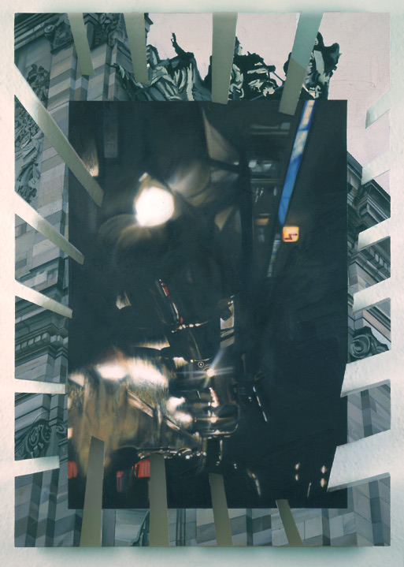
Kirche und Stau,
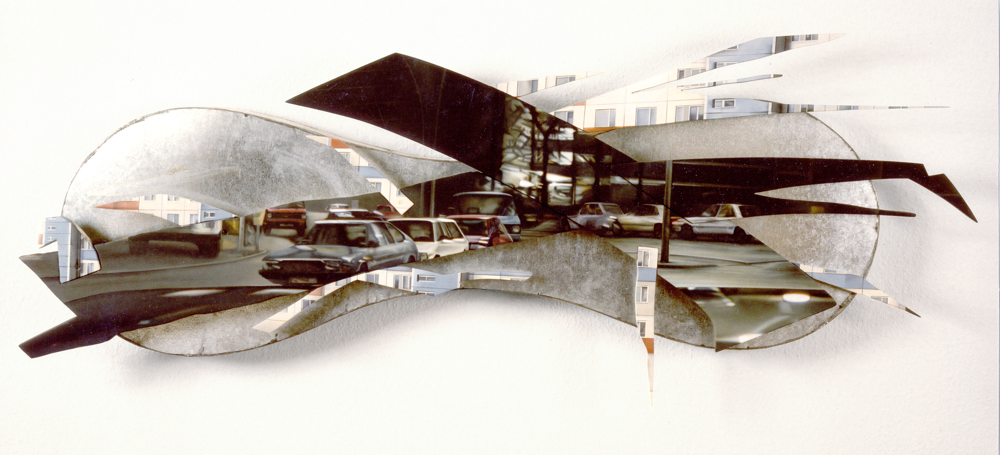
Tage und Nächte in der Stadt,